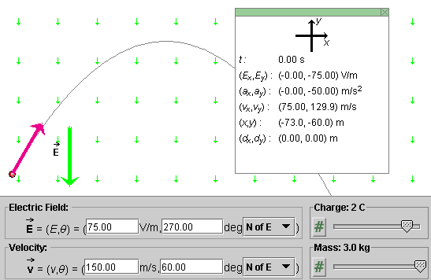
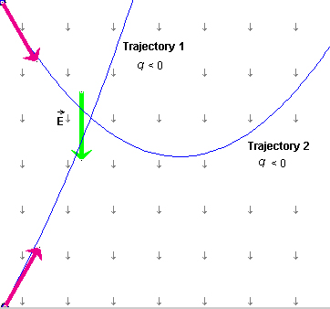

Prerequisites
Students should be familiar with the concepts of electric field, force, acceleration, velocity, and displacement, and be familiar with Newton's second law and the properties of projectile motion in the earth's gravitational field.
Learning Outcomes
Students will develop an understanding of how an electric field affects the motion of charged particles and will learn that, if the field is uniform, the motion is analogous to projectile motion in a gravitational field. They will learn to make calculations on the motion for the case that the field is uniform and will gain additional experience in using the kinematical equations of motion with constant acceleration.
Instructions
Students should know how the applet functions, as described in Help and ShowMe.
The applet should be open. The step-by-step instructions in the following text are to be done in the applet. You may need to toggle back and forth between instructions and applet if your screen space is limited.
 Motion of a Charged Particle in an Electric
Field
Motion of a Charged Particle in an Electric
Field
 Appendix
Appendix
 Equations For Motion With Constant
Acceleration
Equations For Motion With Constant
Acceleration
The applet and the lesson assumes that the particle is subject only to an electric force. The gravitational force is not included.
 the applet.
the applet.
Make the following settings. These settings are also displayed in Figure 1 below.
Play the motion with the particle's path displayed. You should obtain a trajectory like that in Figure 1.

Figure 1
The motion looks just like projectile motion in the
earth's gravitational field! Indeed, the two kinds
of motion are entirely analogous. Instead of a downward uniform
gravitational field there, we have a downward uniform electric
field here. Instead of a constant gravitational force
equal to m
there, we have a constant electric force equal to
q here. In both
cases, the result is a motion with constant downward
acceleration, which implies projectile motion.
here. In both
cases, the result is a motion with constant downward
acceleration, which implies projectile motion.
Therefore, there is not much new for you to learn about the motion of a charged particle in a uniform electric field if you are familiar with projectile motion in a gravitational field.
One difference is that electric charges can be either positive or negative, or zero, while mass is always positive. Let's see what effect a change in sign has on the motion of the particle.
 the applet, and set
the charge to -2.0 C. Don't change any of the other
settings. Then click Play
the applet, and set
the charge to -2.0 C. Don't change any of the other
settings. Then click Play  .
.
You should see the particle's trajectory curving to the left instead of to the right and the particle accelerating upward, rather than downward as before. This is Trajectory 1 in Figure 2 below.

Figure 2
The particle is now accelerating in the direction opposite to that of the electric field because its charge is negative. The particle is still performing projectile motion, but this time it is "falling" upward. There is no "peak" in the trajectory in this case because the particle is already "falling" at the start of the motion.
If you want to see a "peak" in the trajectory, click Rewind and move the particle to the top left corner of the applet window. Then set the velocity direction to 60o S of E. (Not N of E as before!) The initial configuration should look like that for Trajectory 2 in Figure 2.
When you click Play, you should obtain Trajectory 2. The acceleration is again upward, as for Trajectory 1. Trajectory 2 is a mirror image of the trajectory in Figure 1.
Note that, except for the direction of the initial velocity, all parameters are the same for the two trajectories in Figure 2: charge, mass, direction of the field. Therefore, the acceleration of the particle is the same also. See Equation (3) below for the acceleration.
 exerted by an
electric field on a
particle of charge q is equal to
exerted by an
electric field on a
particle of charge q is equal to
= q .  (1)
(1)
Since this is the only force acting on the particle (we are neglecting the gravitational force throughout this Lesson), Newton's second law applied to the particle gives the equation
q = m

 (2)
(2)
whence the acceleration
of the particle is equal to
= (q/m)
.  (3)
(3)
Equation (3) explains why reversing the sign of the
charge changes the direction of the acceleration from
downward to upward. When q is positive, the
electric field vector in Equation (3) is multiplied by a
positive scalar and therefore the acceleration is in the
same direction as the electric field, downward in the
situation considered so far. When q is negative,
the electric field vector is multiplied by a negative
scalar, and therefore the sign of (q/m)
is reversed and the
acceleration is upward.
This theory also predicts that if we reverse the direction of the electric field while keeping the charge negative, the acceleration should reverse again to its original downward direction. Let's test this.
Rewind the applet, and set the direction of to 90o N of E, so that
points upward. The
particle is in the top left corner. Then click Play. You
should obtain a trajectory that curves to the right which
means the particle is accelerating downward.
To reproduce the original trajectory from Figure 1, but this time with a negative charge and an upward directed electric field, Rewind the applet, move the particle to the bottom left corner, and set the particle's velocity to a direction of 600 N of E.

Question 1. Suppose a charged particle starting from rest at time t = 0 is moving in a uniform electric field. The parameters describing the situation are as follows.
: 75.0 V/m in the positive
x-direction
These conditions are illustrated in Figure 3 below.
Figure 3
What is the particle's velocity at t = 1.80 s?
Answer. We are dealing with a two-dimensional problem with constant acceleration.
By far the easiest way to work out the answer is by working with x and y components.
The x and y components of the initial velocity can be written down without calculation:
(vx, vy)(0) = (0, -100)
m/s.  (4)
(4)
The acceleration is given by Equation (3) above. It is in the
positive x-direction since is in this direction and since q is
positive. Thus,
= (ax,
ay) = (a, 0)  (5)
(5)
where the magnitude a of the acceleration is equal to
a = (q/m) E = (3/1.5) x 75 = 150
m/s2 . (6)
(6)
Equation (A1) from the Appendix, combined with the values in Equations (4)-(6), gives for the x and y components of the velocity at t = 1.80 s
vx(1.80) = vx(0) +
ax t = 0 + 150x1.80 = 270 m/s,
 (7)
(7)
vy(1.80) = vy(0) +
ay t = -100 + 0x1.80 = -100 m/s
. (8)
(8)
Results (7) and (8) give us the velocity of the particle at t = 1.80 s.
Question 2. Given the same conditions as in Question 1, what is the particle's displacement during the 1.80-s time interval from the start of the motion?
Answer. Equation (A4) from the Appendix, combined with the values in Equations (4)-(6), gives for the x and y components of the displacement at t = 1.80 s
dx(1.80) = vx(0) t
+ (ax/2) t2 = 0 +
(150/2)x1.802 = 243 m,  (9)
(9)
dy(1.80) = vy(0) t
+ (ay/2) t2 = -100x1.80 +
0 = -180 m . (10)
(10)
Results (7) to (10) for the velocity and the displacement of the particle at t = 1.80 s are illustrated in Figure 4 below.
Figure 4
>>>>> Appendix <<<<<


Figure A1
Axes and Components. In the following equations for the motion of a particle with constant acceleration it is assumed that an x,y coordinate system has been chosen and that the particle has the same acceleration everywhere, with constant x and y components ax and ay.
Sign Changes. In the diagram in Figure A1 above, the direction of the acceleration vector is such that both the x and y components of the vector are positive. In another situation, the direction of the vector may be different, so that one or both of the x and y components may be negative. (Or the direction of the vector may be as shown, but the directions of the x and y axes may have been chosen differently, again causing one or both components of the vector to be negative.) The equations below apply to all such situations. No signs in these equations need to be changed.
2D vs. 1D. The following equations are formulated for the 2D case, motion in two dimensions. However, they also apply to 1D motion, motion along a straight line. In this case, it will often be convenient to choose either the x or y axis to be along the line of motion. Assuming the motion is along the x axis, you will need only the equations for the x components. All y components in any of the equations will be zero. Similarly, if the motion is restricted to the y-axis, just use the y equations and ignore the x equations.
Acceleration, Velocity, and Position vs. Time:
| x components | y components | |
| Acceleration | ax = const | ay = const |
| Velocity | vx(t) = vx(0) + axt | vy(t) = vy(0) + ayt |
| Position | x(t) = x(0) + vx(0)t + (ax/2)t2 | y(t) = y(0) + vy(0)t + (ay/2) t2 |
Table 1
In vector notation, the equations for the x and y components of velocity can be combined into a single equation,
(t) = (0) +
t.  (A1)
(A1)
Similarly, the equations for the x and y position coordinates can be combined into one vector equation,
 (t) = (0) + (0)t + (/2)
t2.
(t) = (0) + (0)t + (/2)
t2.  (A2)
(A2)
Here, denotes the position
vector whose components are (x, y).
Introducing the displacement vector  (t) from the start of the motion at
time t = 0 to time t which is equal to the
change in the position vector,
(t) from the start of the motion at
time t = 0 to time t which is equal to the
change in the position vector,
(t) = (t) - (0),  (A3)
(A3)
Equation (A2) can be rewritten as
(t) = (0)t + (/2) t2.  (A4)
(A4)
Speed vs. Displacement:
Dv2 =
v2(t) - v2(0) =
2axDx +
2ayDy
For 1D motion, say, along the x axis, the speed vs. displacement relation reduces to
Dv2 =
v2(t) - v2(0) =
2axDx =
2ax[x(t) - x(0)] .
 (A7)
(A7)